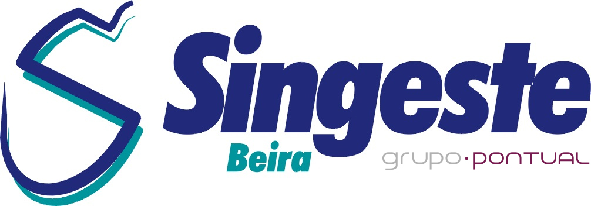
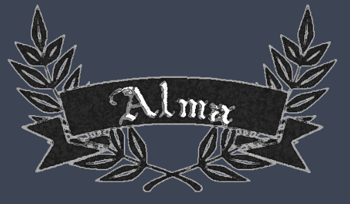

Estágio realizado na Singeste Beira
Miguel Antunes | 02.2018
Este estágio foi realizado no 1º ano do secundário durante o Curso de Gestão e Programação de Sistemas Informáticos.
Vou falar um pouco do estágio que realizei nesta empresa e os conhecimentos que adquiri.

Estágio realizado na Câmara Municipal do Fundão
Miguel Antunes | 02.2018
Este estágio foi realizado nos 2 ultimos anos do secundário durante o Curso de Gestão e Programação de Sistemas Informáticos.
Vou falar um pouco dos 2 anos estágio que realizei nestas instalações .
Estágio realizado na empresa Famous Gadget
Miguel Antunes | 02.2020
Já a estudar na EST realizei estágio na Logirix para a concusão do meu CTeSP,
empresa onde obtive bastante experiência no que toca a ambiente de empresa e onde sem dúvida adquiri bastantes conhecimentos.

Prova de aptidão Profissional (PAP) elaborada no fim do secundário
Miguel Antunes | 05.2018
Este projeto consiste em um jogo realizado em flash,
Um projeto que me deu bastante gosto em fazer devido aodesafio que foi.